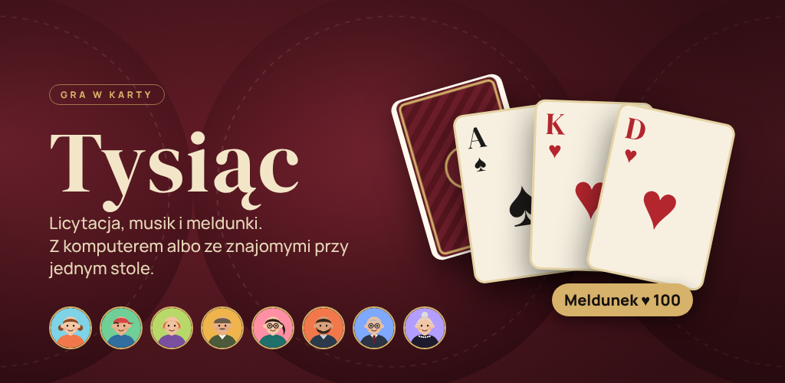

Dawikk
TYSIĄC
Klasyczna gra w karty do 1000 punktów: licytacja, musik, meldunki i bomby. Z komputerem na ośmiu poziomach albo ze znajomymi przy jednym stole – także bez internetu.
Gra z komputerem
Osiem postaci: od Tosi, która dopiero poznaje karty, po Mecenas, która przelicza każde rozdanie do końca. Gra w 2, 3 albo 4 osoby. Silnik liczy na telefonie, bez serwera.
Zasady, jakie lubisz
Jak na kurnik.pl, polskie domowe albo rosyjsko-ukraińskie (licytacja co 5, beczka 880, trzy zera). Każda reguła to przełącznik. Dodatki: 555, cztery asy, gra w ciemno.
Ze znajomymi przez Wi‑Fi i Bluetooth
2–4 telefony przy jednym stole, bez internetu i bez kont. Dołączasz z listy, kodem albo kodem QR. Wolne miejsca mogą zająć boty, a gdy ktoś się rozłączy, bot gra za niego do powrotu.
Trening, historia i ocena decyzji
Podpowiedzi silnika w treningu z komputerem, historia każdego rozdania z powtórką i ocena Twoich decyzji. Na początek samouczek: jedno rozdanie krok po kroku.
Rozdanie dnia i profil
Codziennie te same karty dla wszystkich. Rangi od Stu do Tysiąca, statystyki i odznaki – osobno także dla gry ze znajomymi.
Dla każdego
Polski, angielski, ukraiński i rosyjski. Gra działa bez internetu. Opisy dla czytnika ekranu, duże pola dotyku i teksty bez form zależnych od płci.

Wkrótce w Google Play i App Store.